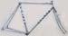
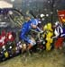
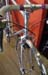
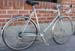
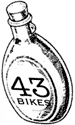

> go to the 43 bikes
1907 Dursley Pedersen #7 Racer
1937 Schwinn Admiral (c.1977 clunker)
1956 Peugeot PLX-10
1957 René Herse Randonneuse
1959 Bianchi Tour de France
1960 Bowden Spacelander (1997)
1961 Legnano Roma Olimpiade
1962 Cinelli SC
1965 Bianchi Specialissima
1969 Pogliaghi strada
1970 Mercier èquipe
1972 Masi Gran Criterium
1973 De Rosa strada
1973 Colnago Super
1975 René Herse Demountable
1970s Sablière
1977 Cook Brothers cruiser
1980 Breezer
1980 Raleigh TI-Team 753
1981 Ritchey MountainBike
1981 Mongoose Kos Kruiser
1981 Sweetheart Cycles Moto-Cruiser
1981 Schwinn King Sting
1982 Araya AX æro
1982 Specialized Stumpjumper
1985 Specialized Stumpjumper Team
1985 Specialized Stumpjumper tourer
1985 Bianchi Centenario
1986 Cunningham Indian
1986 Alan cyclocross
1987 Walton - Mook's custom
1987 Walton - Jim's custom
1988 Yeti F.R.O.
1989 Rossin Ghibli
1989 Peugeot 753R
1990 Brutto Scherzo
1990 Mantis Valkyrie
1997 Merlin XLM
1997 Look KG 196 CLM
1998 Brian Baylis
1999 Ti Cycles Hyak
2000 Pegoretti Custom
2001 Independent Fabrication ss
2002 Bohemian track
2004 Alex Singer 650b
2006 'Ghostplumber'
2007 'Gangster Trike'
2007 'N43b Track Cruiser'
2007 'Mookie Chopper'
last modified:
12/27/06
Alan Cyclocross
click to enlarge
~~~~~~


'Winning'
magazine
1987 article about
Paul Curley's bike:
race in 1931:
~~~~~~~


>
large images
1
2
3
4

home
copyright
©
2006


{kind=link}
{kind=link}
{kind=link}
{kind=link}
{kind=link}
{kind=link}
{kind=link}
{kind=link}
{kind=link}
{kind=link}
{kind=link}
{kind=link}
{kind=link}
{kind=link}
{kind=link}
{kind=link}